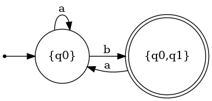

非确定性自动机(Non-deterministic Finite Automata)
基本定义
以下两图展示了两种NFA相对于DFA的特殊性质。

- 在同一个状态同一个输入后，也可以跳转到不同的状态
- 即使输入是空，也可以跳转到不同的状态
那字符串输入图灵机后会发生什么呢，我们有两种理解方式:
- 字符串会尝试NFA中转移的每一个可能性，形成一个树状结构，在最后，只要有一种可能性落在了NFA的finial state中，即属于该NFA表达的regular language。
- 每次一个字符输入NFA，NFA总会选择最优的分支，如果该字符串输入该NFA表达的regular language，那么最终的状态一定会属于final state
容易知道以上两种表达方式是相同的。
公式化定义
NFA可由5个要素表达：\(\{K,\sum,\Delta,s,F\}\),与DFA唯一的区别是\(\Delta\):
\(\Delta=K\times(\sum\cup\{e\})\times K\)
与之前的区别就是\(\delta\)是一个函数，一对state和input只能得到一个值，而\(\Delta\)是一个集合，一对state和input能得到多个值，而且input可以为空。
与DFA相同有\(\vdash^M的定义，此处不重复\)
NFA的设计会简单很多，因为总能猜对，只要我们能保证：
- 当input属于regular language时候，总有路走对。
- 当input不属于的时候，没有路能走对。
NFA和DFA等价性
任意一台NFA均有和他等价的DFA
对于任意一NFA，如果我们把它的状态的集合看成一个状态，那由于每次输入一个字符，一个状态能跳转到的状态终究是属于该NFA状态的集合，所有我们可以用状态的集合组成的状态来描述NFA的跳转，此时的跳转是确定的。
例子
我们将用如下例子来说明一个DFA是如何转化为NFA的

将NFA中的可能状态的集合作为DFA的可能状态，得状态如下：
\(\{q_0\},\{q_0,q_1\},\{q_1\},\emptyset\)
以上是DFA的可能状态，其中，初始状态与NFA相同，为\(\{q_0\}\)，最终状态为包含NFA中最终状态的集合，为\(\{q_0,q_1\},\{q_1\}\)
NFA中\(q_0\)输入a后只会跳转到\(q_0\)，而\(q_0\)输入b后有可能跳转到\(\{q_0,q_1\}\)
对于\(q_1\)来说，无论a还是b,路都是断掉的，所以输入a,b后，进入空集状态，对于空集状态亦如此。
对于\(\{q_0,q_1\}\)，读a之后有可能出现的集合只有\(q_0\)（\(q_1\)读入a无之后状态，\(q_0\)读入a进入\(q_0\)），读入b之后有可能去到的状态还是\(\{q_0,q_1\}\)，得下图。
由于初始状态为\(q_0\)，所以有些状态无法到达，删掉这些状态，得到最终结果 
（画图真的好烂啊我x）
公式化表达
我们定义一个\(E(q)\)具有如下性质
- \(q\in E(q)\)
- \(if (p,e,r) \in \Delta,r\in E(q)\)
我把它叫做q的等价状态集（因为他们之间的转移无需输入任何字符）
那么对于一个NFA \(M=\{K,\sum,\Delta,s,F\}\)，我们可以找到一个DFA \(M'=\{K',\sum,\delta',s',F'\}\)，其中：
- \(K'=2^K\) (即用NFA中状态的集合作状态)
- \(s'=E(s)\) （即所有s的等价状态）
- \(F'=\{Q\subseteq K : Q \cup F \neq \emptyset \}\) （即任何包含NFA中final state的状态）
- \(\delta'(Q,a) = \bigcup \{ E(p): p \in K\ and\ (q,a,p)\in\Delta\ for\ some\ q \in Q \}\)(即Q中的状态所能到达所有的状态和他们的等价状态组成的集合)